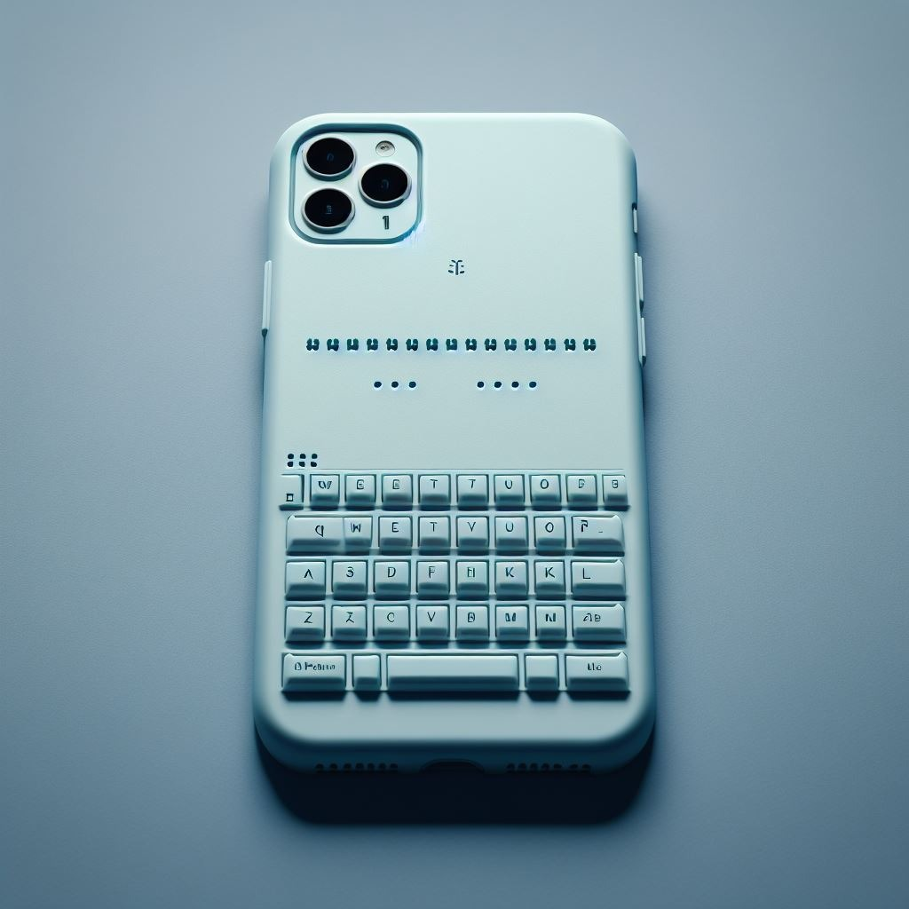

Sobre la empresa
Nuestra empresa se dedica a crear prototipos útiles que responden a las necesidades específicas de cada persona, ofreciendo soluciones personalizadas, accesibles y eficientes.
Equipo de trabajo
Somos un equipo de tres estudiantes apasionados por la innovación social y la inclusión laboral. Nuestra empresa se dedica a ayudar a las personas con discapacidad creando prototipos útiles que les faciliten su vida cotidiana y su integración en el mercado de trabajo.
Productos y servicios
Teclado braille
Este es el ultimo teclado braille, creación basada en el abecedario braille, permite que las personas con discapacidad visual se puedan comunicar.
- Características:
- - Funda compatible con la gran mayoría de dispositivos móviles
- - Teclado con conectividad Bluetooth
- - Tamaño compacto
- - Compatible con sistemas Android, iOS, Mac OS y Windows
Curso basico de aprendizaje braille
En este curso aprenderas todo acerca del lenguaje braille, muy útil para quienes quieren aprender a comunicarse con este método o ayudar a otros a hacerlo.
- El curso incluye:
- -La historia y los principios del lenguaje braille
- -Los símbolos y las reglas del alfabeto braille
- -Los diferentes tipos de braille, como el braille español, el braille internacional o el braille matemático
- -Los materiales y las herramientas para escribir y leer en braille, como el punzón, la regleta, el papel o el lector electrónico
- -Los beneficios y los desafíos de usar el lenguaje braille en la educación, el trabajo y la vida cotidiana
Servicio de mantenimiento
Tenemos servico tecnico 24/7
- En este servicio ofrcemos:
- -Oferta 50% de descuento en tu primer diasnostico inicial
- -Plan de mantenimiento preventivo, que establezca las acciones, los tiempos y los recursos necesarios para realizar revisiones periódicas, limpiezas, ajustes, calibraciones, actualizaciones y sustituciones de piezas o equipos que garanticen el óptimo rendimiento y la prevención de averías
- -Plan de mantenimiento correctivo, que defina los procedimientos, los protocolos y los medios para atender y resolver las incidencias, los problemas o las emergencias que se presenten en los dispositivos tecnológicos, ya sea de forma remota o presencial, con el menor impacto posible en la operación y la calidad del servicio.
- -Sistema de gestión de mantenimiento, que permita registrar, monitorear, evaluar y mejorar las actividades de mantenimiento, así como generar informes, estadísticas y alertas que faciliten la toma de decisiones y la optimización de los recursos.
- -equipo humano capacitado, profesional y comprometido, que cuente con las competencias, las herramientas y los equipos necesarios para realizar las tareas de mantenimiento de forma eficiente, segura y responsable.
- -servicio de atención al cliente, que brinde asesoría, soporte técnico y soluciones rápidas y efectivas a las consultas, las solicitudes o las reclamaciones de los usuarios de los dispositivos tecnológicos.